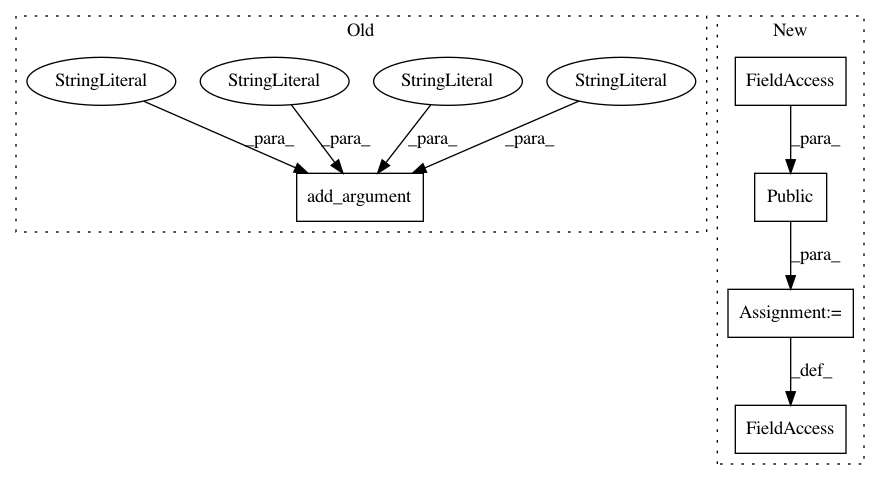

29db4abdbeb839340ac5b0caf934ebda93892934,cnvlib/commands.py,,,#,389
Before Change
P_reference_bias = P_reference.add_argument_group(
"To disable specific automatic bias corrections")
P_reference_bias.add_argument("--no-gc", dest="do_gc", action="store_false",
help="Skip GC correction.")
P_reference_bias.add_argument("--no-edge", dest="do_edge", action="store_false",
help="Skip edge-effect correction.")
P_reference_bias.add_argument("--no-rmask", dest="do_rmask", action="store_false",
help="Skip RepeatMasker correction.")
After Change
// reference -------------------------------------------------------------------
do_reference = public(reference.do_reference)
do_reference_flat = public(reference.do_reference_flat)
def _cmd_reference(args):
In pattern: SUPERPATTERN
Frequency: 3
Non-data size: 5
Instances
Project Name: etal/cnvkit
Commit Name: 29db4abdbeb839340ac5b0caf934ebda93892934
Time: 2017-02-24
Author: eric.talevich@gmail.com
File Name: cnvlib/commands.py
Class Name:
Method Name:
Project Name: etal/cnvkit
Commit Name: 29db4abdbeb839340ac5b0caf934ebda93892934
Time: 2017-02-24
Author: eric.talevich@gmail.com
File Name: cnvlib/commands.py
Class Name:
Method Name:
Project Name: etal/cnvkit
Commit Name: 29db4abdbeb839340ac5b0caf934ebda93892934
Time: 2017-02-24
Author: eric.talevich@gmail.com
File Name: cnvlib/commands.py
Class Name:
Method Name: